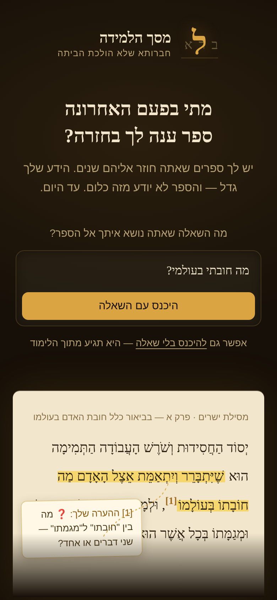
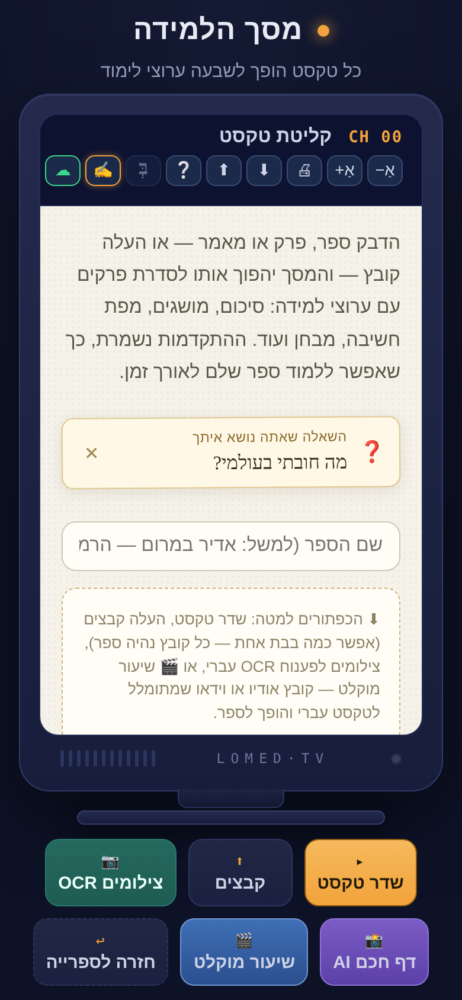
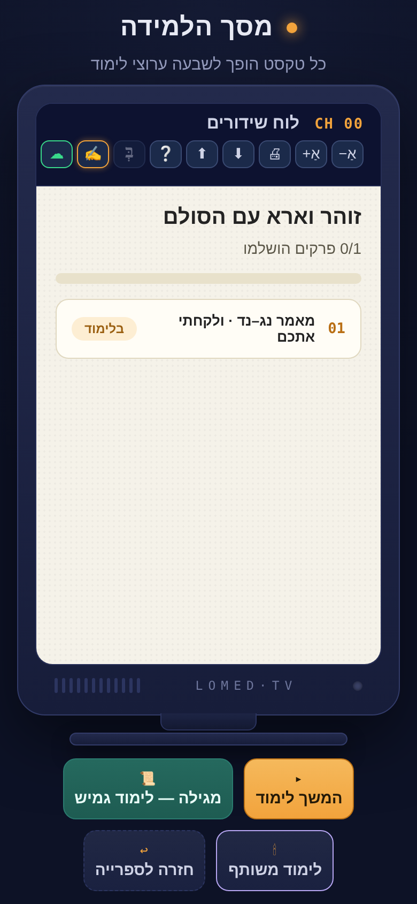
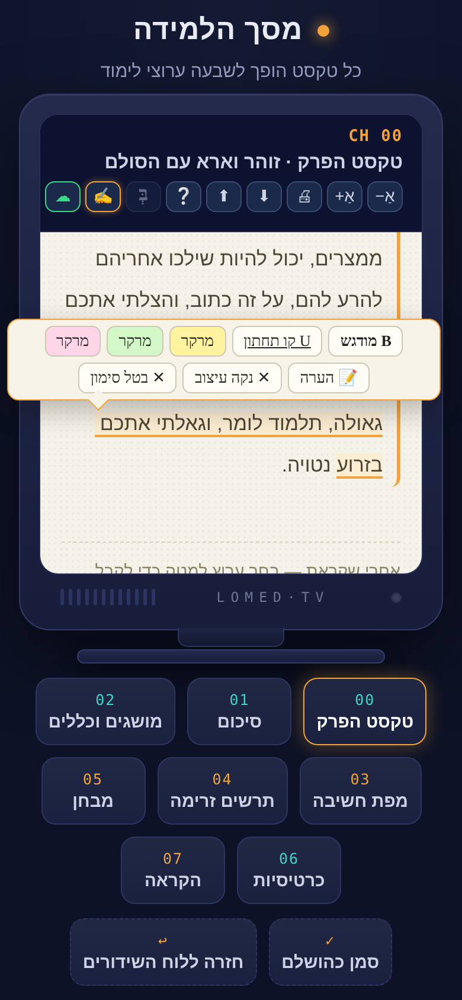
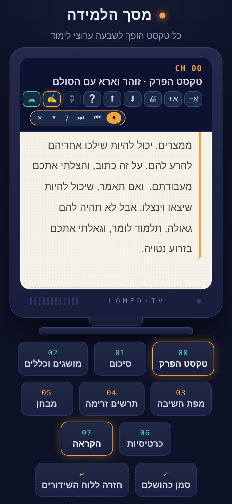
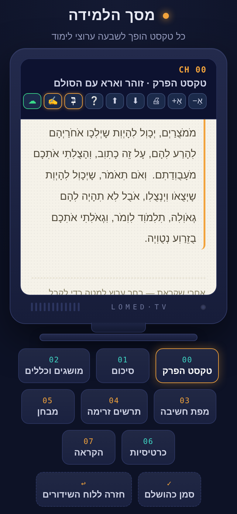
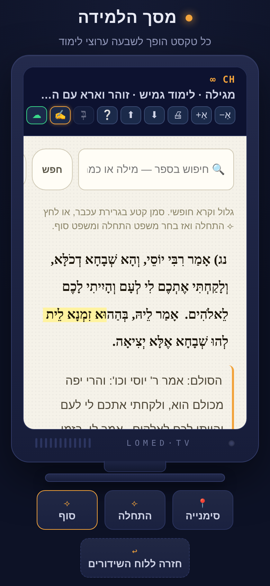
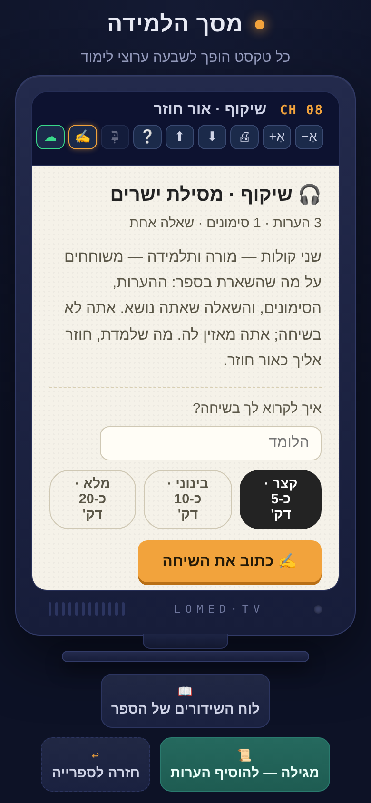
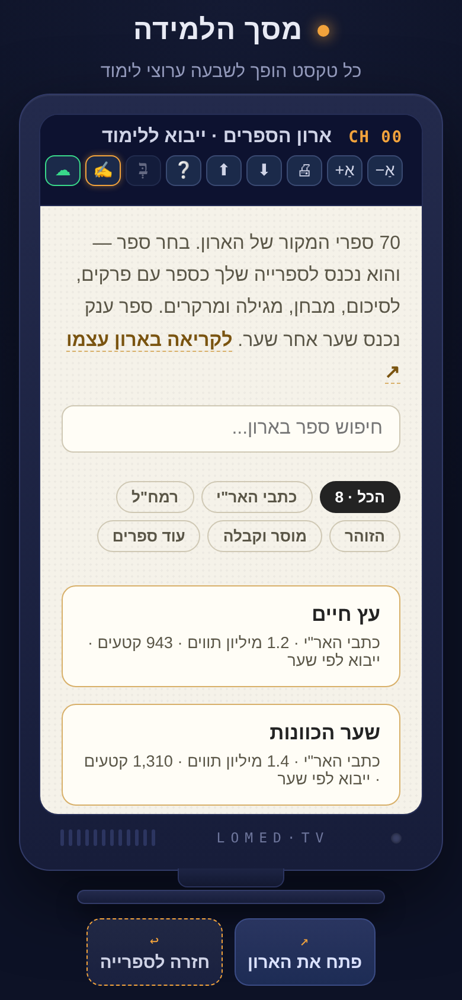
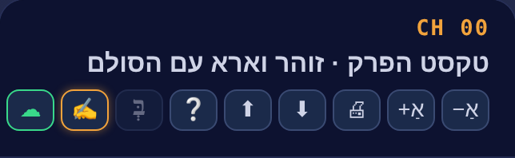

1להתקין ולהיכנס
באייפון: הקישור ל-TestFlight מתקין את "מסך הלמידה" על מסך הבית. בכל מכשיר אחר: אותה אפליקציה בדיוק בדפדפן, בכתובת famous-rolypoly-1ab096.netlify.app. הכניסה לחשבון היא במייל בלבד, בלי סיסמה: לוחצים על הענן ☁ למעלה, מקלידים מייל, ולוחצים על הקישור שמגיע למייל.

2השאלה שאתה נושא
האפליקציה נפתחת בשאלה: מה השאלה שאתה נושא איתך אל הספר? אפשר לכתוב כל דבר שמעסיק אותך. השאלה מלווה את הלימוד: הסיכום, המבחן וההקראה מתייחסים אליה. אפשר לדלג, ולשנות אותה בכל רגע מהספרייה.
3להכניס ספר: חמישה שערים
בספרייה לוחצים ⊕ ספר חדש. חמש דרכים: להדביק טקסט · להעלות קובץ (PDF, וורד, טקסט) · לצלם דף מספר מודפס (המצלמה קוראת את הדף, גם ארמית) · להקליט שיעור או הרצאה (ההקלטה מתומללת והופכת לספר) · ארון הספרים: שבעים ספרי מקור מוכנים, לוחצים על ספר והוא בספרייה. הטקסט מתחלק לפרקים לבד.

4לוח השידורים והערוצים
לוחצים על ספר ומגיעים ללוח השידורים: רשימת הפרקים. לוחצים על פרק ומתחת למסך מופיעים הערוצים: 00 טקסט הפרק · 01 סיכום · 02 מושגים וכללים · 03 מפת חשיבה · 04 תרשים זרימה · 05 מבחן · 06 כרטיסיות · 07 הקראה. כל ערוץ מופק פעם אחת ונשמר עם הספר.

5שכבת הלומד: לסמן ולהעיר
בטקסט הפרק גוררים על מילה או כמה מילים, ולשונית נפתחת מעל: מרקר בשלושה צבעים, הדגשה, קו תחתון, והערה. לקטע שלם: לוחצים על משפט ההתחלה ואז על משפט הסוף. ההערה נכתבת, או נאמרת בקול 🎙. ההערות ממוספרות בשוליים כמו בגמרא, ונשמרות בענן. אותה שכבה עובדת גם על הסיכום, המושגים והכרטיסיות, כי הסימונים שלך הם שלך, גם על מה שהמכונה כתבה.

6הקראה כקריוקי
לוחצים 07 הקראה. הדף נשאר, ובשורה העליונה מופיע נגן קטן: ▶ מתחיל, המשפט הנקרא מואר, והמילים שכבר נקראו מתמלאות בצבע. לחיצה על משפט בדף מתחילה ממנו. החץ ▾ פותח הגדרות: קצב, צבע ההארה, ובדף סולם: להקריא הכול, רק את הארמית, או רק את הסולם. ניקוד, גרשיים וראשי תיבות לא מוקראים, אלא מתפרשים.

7ניקוד בלחיצה
הכפתור בְּ למעלה מוסיף ניקוד לטקסט שאין בו ניקוד, כמו פירוש הסולם. לחיצה נוספת מסתירה. הניקוד מגיע מהנקדן של דיקטה, נשמר עם הספר, והסימונים שלך נשארים במקומם בשני המצבים.

8המגילה: כל הספר ברצף
מלוח השידורים: 📜 מגילה. כל הספר ברצף אחד, עם אותם מרקרים והערות, חיפוש שמבין עברית, סימנייה "עד כאן קראתי", ולימוד גמיש: מסמנים קטע ומפיקים עליו סיכום, מושגים או מבחן.

9שיקוף: שומעים את ההערות שלך
אחרי שלושה סימונים או הערות בספר מופיע לידו 🎧 שיקוף. שני קולות, מורה ותלמידה, משוחחים על מה שסימנת וכתבת, ועל השאלה שאתה נושא. קודם קוראים את התסריט, ואז מפיקים את הקול. הקובץ נשמר ליד הספר להאזנה חוזרת.

11ארון הספרים
📚 ארון הספרים: שבעים ספרי מקור, מכתבי האר"י ועד הזוהר. מחפשים בשם, לוחצים, והספר בספרייה. ספר גדול מוצע לפי שערים. מהארון עצמו יש כפתור 📺 חזרה למסך הלמידה.

12הכפתורים למעלה
אַ− אַ+ מקטינים ומגדילים את הטקסט · 🖨 מדפיס את מה שמוצג · ⬇ מוריד גיבוי של כל הספרים וההערות לקובץ · ⬆ משחזר מגיבוי · בְּ ניקוד · ✍️ שכבת הלומד · ☁ החשבון · ❔ המדריך הזה.

13מה כדאי לבדוק
לא חייבים הכול. אבל אם תעברו על הדברים האלה, נדע הרבה. סמנו לעצמכם מה עשיתם — הסימון נשמר בדפדפן שלכם בלבד.
14ספרו לנו
כמה שאלות קצרות. מה שתכתבו מגיע ישירות לחיים. אפשר למלא כמה פעמים, בכל שלב.